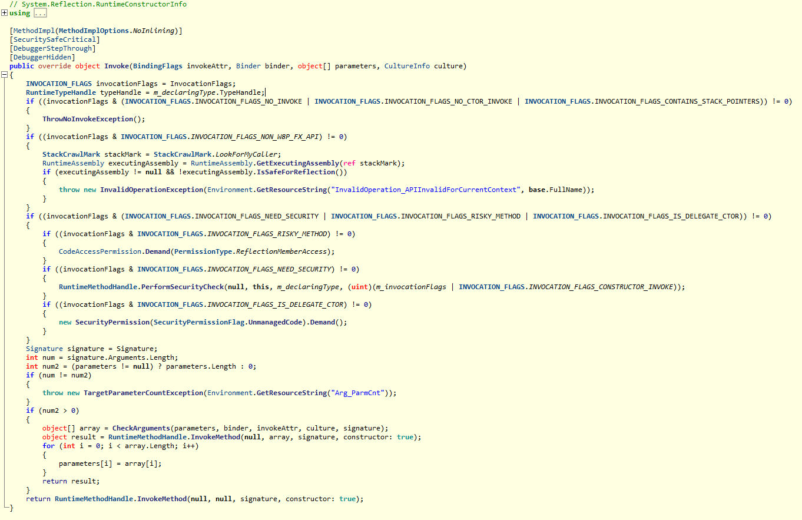
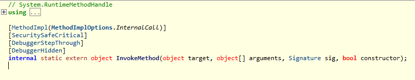
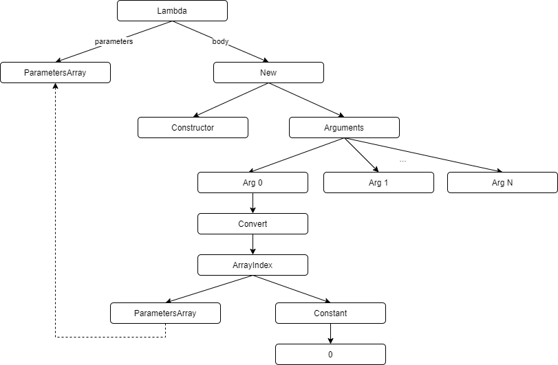

Dependency Injection
Dependency injection is one of my favorite design pattern. The application is kind of transparent, which is one-off configuration in the app startup, and then use it naturally like it doesn’t exist. I always have the questions how it works, and how about the performance? It takes me some time to dig into and find out the answer.
What is dependency injection
Why we want to use dependency injection? The best advantage is decouple. For example, A dependents on B, B dependents on C. It’s like a path A -> B -> C. One day, C add a new dependency D. Everyone on the path need to change. Dependency injection solves this problem. You will not need to update the dependent path any more.
new C()
new B(new C())
new A(new B(new C()))
// C add a dependency D
new C(new D())
new B(new C(new D()))
new A(new B(new C(new D())))
To apply the design pattern of dependency injection, I found a good article: Dependency injection into controllers in ASP.NET Core
A short version is:
- Define both the class and interface
- Depend on the interface, instead of the class
- Declare the dependents as constructor parameters
- Register class and interface at global entry point
public interface ICar
{
}
public class Car: ICar
{
private readonly IEngine engine;
public Car(IEngine engine)
{
this.engine = engine
}
}
public interface IEngine
{
}
public class Engine : IEngine
{
}
public static void Main()
{
var serviceCollection = new Microsoft.Extensions.DependencyInjection.ServiceCollection()
.AddTransient<ICar, Car>()
.AddTransient<IEngine, Engine>()
var serviceProvider = serviceCollection.BuildServiceProvider();
ICar car = serviceProvider.GetService<ICar>();
}
Looking at the code, except the registration code in the main entry point, there is no any other extra code. Declaring the dependency, then everything just work. How simple it is.
How dependency injection works
Dependency injection need to solve two problems. First is the dependency path, for example A->B->C. To create A, we need create B first. To create B, we need create C first. This problem can be solved by recursion.
private object GetService(Type type)
{
// some code is omitted
for (int i = 0; i < arguments.Length; i++)
{
arguments[i] = this.GetService(argumentType);
}
return NewObj(type, arguments);
}
Second is given a type at runtime, how to dynamically create an object. This problem is not easy. I found the source code of .NET framework library Microsoft.Extensions.DependencyInjection on Github (Update: the link is broken). From my understanding, I implemented a simplified version. Here’s the source code dependency-injection-example.
There’re three ways to dynamically create an object of a type:
- Reflection
- Dynamic Method
- Lambda Expression
Reflection
Reflection is straightforward. .NET framework provide official support to create an object based on a type.. Given a Type, call GetConstructor to get the ConstructorInfo, call Invoke with constructor arguments.
ConstructorInfo constructor = GetConstructors()[0];
object[] arguments = new object[] { arg1, arg2, arg3 };
object obj = constructor.Invoke(arguments);
The code is simple, but the performance is bad. The benchmark in the end shows 70x slower. Digging into the implementation, the code is complicate. It constructs a Signature, perform security check on demand, and argument’s value type check. All these logics will slow down the performance. At the end, it call .NET runtime internal function to create the object. It’s some C/C++ native code we don’t know.
ConstructorInfo.Invoke:

.NET Runtime internal Invoke:

Intermediate Language (IL)
Before talking about the other two approaches, we need introduce IL. Intermediate Language (IL) is a low level programing language in .NET. Think about the relationship between Assembly language and C++. IL and C# are similar. C# compiler compiles C# code into IL code, and stored in the assembly, which may be a dll or exe file. ILSpy is a tool to view IL code inside the assembly. .NET CLR (Common Language Runtime) loads the assembly, JIT(Just-In-Time) compiles the IL code into native code. The native code are native machine instructions, and executed by machine. Here’s the full explanation Introduction to the C# language and the .NET Framework.
C# -> IL -> native code
Back to our topic, the idea is we’ll do the compiler’s work, generate IL code at runtime, and then let .NET CLR execute the generated IL code. (Hmm, the idea is smart) .NET framework provides DynamicMethod to support it. Later, .NET Framework provide lambda expression in newer version, which improved the dynamic code generation.
new operator’s corresponding IL code is newobj.
C#
new Car(engine);
IL
ldarg.0
newobj instance void DependencyInjectionExample.Car::.ctor(class DependencyInjectionExample.IEngine)
Dynamic method
Here’s the steps to use Dynamic Method, and the full article is here.
- Create a Dynamic Method object
- Generate IL codes as the body of the Dynamic Method.
- Create a delegate to invoke the Dynamic Method. It’s just like a normal function call.
IL is a big topic. Here’s a good article to read Introduction to IL Assembly Language. IL is kind of Assembly language. CPU execute instructions, register stores value. The CPU instruction reads value from register, calculates, saves the result to register. IL uses the same pattern, instruction and stack. The process is, push arguments on the stack, instruction execute, the instruction read the value from stack and pop the stack, then push the result on the stack.
1 + 2 in Assembly language:
MOV EAX 1
MOV EBX 2
ADD EAX, EBX ; Add EBX to EAX
We’ll create a dynamic method which is a function with a parameter which type is object array, and return type is object. The parameter object array contains the arguments need to pass to the constructor, the function return the created object. The function body is IL code, which push the objects of the array on the stack one by one, and then call the constructor function, the constructor function push the object on the stack, then return it.
The generated pseudo code:
object DynamicNewCar(object[] parameters)
{
// IL code:
// arg_0 is the first parameter of the dynamic method
// push arg_0 on the stack
ldarg.0
// push index 0 on the stack
ldc.i4.0
// read the array by index, pop previous and push args[i] on the stack
ldelem.ref
// convert to the corresponding constructor argument type, pop previous and push
castclass DependencyInjectionExample.IEngine
// push the second argument
ldarg.0
ldc.i4.1
ldelem.ref
castclass DependencyInjectionExample.IControlPanel
// Call newobj instruction with the constructor, pop previous and push the object on the stack
newobj instance void DependencyInjectionExample.Car::.ctor(class DependencyInjectionExample.IEngine, class DependencyInjectionExample.IControlPanel)
// return with the return value on the stack
ret
}
Dynamic method:
DynamicMethod dynamicMethod = new DynamicMethod(
"NewObj",
typeof(object),
new Type[] { typeof(object[]) });
var il = dynamicMethod.GetILGenerator();
for (int i = 0; i < constructorParameterTypes.Length; i++)
{
// arg_0 is the parameter of the dynamic method, the type is object array
// push arg_0 on the stack
il.Emit(OpCodes.Ldarg_0);
// push index i on the stack
il.Emit(OpCodes.Ldc_I4, i);
// read the array by index, pop previous and push args[i] on the stack
il.Emit(OpCodes.Ldelem_Ref);
// convert to the corresponding constructor argument type, pop previous and push
il.Emit(OpCodes.Castclass, constructorParameterTypes[i]);
}
// Call newobj instruction with the constructor, pop previous and push the object on the stack
il.Emit(OpCodes.Newobj, constructor);
// return with the return value on the stack
il.Emit(OpCodes.Ret);
var newObj = (Func<object, object[]>)dynamicMethod.CreateDelegate(typeof(Func<object, object[]>));
/// use the delegate
var arguments = new object[] { engine };
var car = (ICar) newObj(arguments);
Dynamic Method is efficient. But the disadvantage is the code maintenance. The IL code isn’t compiled. It means if we generate wrong IL code, it will error at runtime, but we don’t get any error at compile time. Besides, IL is machine oriented low level programming language, it’s not easy to read and maintain.
Lambda Expression
With lambda expression, we don’t need to write IL directly. We still write C# code, but in a special “compiler” way. The compiling process has two steps: 1) parse the C# code to build a syntax tree; 2) use the syntax tree to generate IL code. The idea is we do the first step building an Expression Tree, then leave the remaining to the compiler.

var parametersExpr = Expression.Parameter(typeof(object[]));
var constructorArgumentList = new List<Expression>();
for (int i = 0; i < constructorParameterTypes.Length; i++)
{
var indexExpr = Expression.Constant(i);
var arrayItemExpr = Expression.ArrayIndex(parametersExpr, indexExpr);
var castExpr = Expression.Convert(arrayItemExpr, constructorParameterTypes[i]);
constructorArgumentList.Add(castExpr);
}
var newExpr = Expression.New(constructor, constructorArgumentList.ToArray());
var lambda = Expression.Lambda<NewObjDelegate>(newExpr, parametersExpr);
var newObj = lambda.Compile();
/// use the delegate
var arguments = new object[] { engine };
var car = (ICar) newObj(arguments);
Benchmark
Here’s the source code of the benchmark: dependency-injection-example. The performance is also determined by the dependency path.
| Method | Mean | Error | StdDev | Ratio | RatioSD |
|---|---|---|---|---|---|
| SimpleCreate | 13.28 ns | 0.045 ns | 0.042 ns | 1.00 | 0.00 |
| LibraryCreate | 56.57 ns | 0.062 ns | 0.058 ns | 4.26 | 0.02 |
| DynamicMethodCreate | 110.48 ns | 0.575 ns | 0.538 ns | 8.32 | 0.05 |
| LambdaExpressionCreate | 106.78 ns | 0.069 ns | 0.064 ns | 8.04 | 0.03 |
| ConstructorInvokeCreate | 970.19 ns | 6.023 ns | 5.634 ns | 73.04 | 0.43 |
Mean : Arithmetic mean of all measurements
Error : Half of 99.9% confidence interval
StdDev : Standard deviation of all measurements
Ratio : Mean of the ratio distribution ([Current]/[Baseline])
RatioSD : Standard deviation of the ratio distribution ([Current]/[Baseline])
1 ns : 1 Nanosecond (0.000000001 sec)
BenchmarkDotNet=v0.12.1, OS=Windows 10.0.18362.778 (1903/May2019Update/19H1)
Intel Core i7-9700K CPU 3.60GHz (Coffee Lake), 1 CPU, 8 logical and 8 physical cores
[Host] : .NET Framework 4.8 (4.8.4121.0), X86 LegacyJIT
DefaultJob : .NET Framework 4.8 (4.8.4121.0), X86 LegacyJIT